경영지도사-1차-1교시(구) (2014-05-17 기출문제)
1과목: 중소기업관련법령
1. 중소기업기본법상 영리를 목적으로 사업을 하는 기업 중에서 중소기업에서 제외시키는 기준이 아닌 것은?
- 상시근로자 수가 1천명 이상인 기업
- 자산총액이 5천억원 이상인 기업
- 자기자본이 1천억원 이상인 기업
- 직전 3개 사업연도의 평균 매출액이 1천억원 이상인 기업
- 「독점규제 및 공정거래에 관한 법률」에 따른 상호출자제한기업집단에 속하는 기업
(정답률: 알수없음)

2. 중소기업기본법상 중소기업 옴부즈만 제도에 관한 설명으로 옳지 않은 것은?
- 중소기업에 영향을 주는 기존규제의 정비 및 중소기업 애로사항의 해결을 위하여 중소기업청장 소속으로 중소기업 옴부즈만을 둔다.
- 중소기업 옴부즈만은 중소기업에 영향을 미치는 규제의 발굴 및 개선 등의 업무를 독립하여 수행한다.
- 중소기업 옴부즈만은 중소기업 및 규제 분야의 학식과 경험이 많은 자 중에서 중소기업청장의 추천과「행정규제기본법」에 따른 규제개혁위원회의 심의를 거쳐 대통령이 위촉한다.
- 중소기업 옴부즈만은 업무에 관한 활동 결과보고서를 작성하여 매년 1월 말까지 규제개혁위원회와 국무회의 및 국회에 보고하여야 한다.
- 중소기업 옴부즈만은 업무처리 결과에 따라 필요한 경우 업무기관의 장에게 관련 사항의 개선을 권고할 수 있다.
(정답률: 알수없음)
3. 중소기업기본법상 중소기업육성을 위해 정부가 시행하여야 할 시책에 해당하지 않는 것은?
- 판로 확보
- 공정경쟁 및 동반성장의 촉진
- 지방 소재 중소기업 등의 육성
- 중소기업 경영의 투명성 제고
- 창업 촉진과 기업가정신의 확산
(정답률: 알수없음)
4. 중소기업기본법에 관한 내용으로 옳지 않은 것은?
- 정부는 중소기업시책을 실시하기 위하여 필요한 법제 및 재정 조치를 하여야 한다.
- 중소기업이 그 규모의 확대 등으로 중소기업에 해당하지 아니하게 된 경우에는 그 사유가 발생한 연도부터 5년간 중소기업으로 본다.
- 정부는 중소기업을 육성하기 위하여 추진할 중소기업시책에 관한 계획을 수립하여 관련 예산과 함께 3월까지 국회에 제출하여야 한다.
- 정부는 중소기업의 구조를 고도화하기 위하여 중소기업 사이의 합병 등을 원활히 할 수 있는 시책을 실시하여야 한다.
- 정부는 중소기업시책을 효율적으로 실시하기 위하여 조세에 관한 법률에서 정하는 바에 따라 세제상의 지원을 할 수 있다.
(정답률: 알수없음)
5. 중소기업창업 지원법상 창업에서 제외되는 업종이 아닌 것은?
- 금융 및 보험업
- 부동산업
- 무도장 운영업
- 산업용 세탁업
- 골프장 및 스키장 운영업
(정답률: 알수없음)
6. 중소기업창업 지원법에 관한 내용으로 옳지 않은 것은?
- 중소기업을 창업하여 사업을 개시한 날부터 6년인 자는 창업자에 해당한다.
- 중소기업상담회사로서 등록하기 위해서는 납입자본금이 5천만원 이상이어야 한다.
- 투자실적이 납입자본금의 100분의 50 이상인 중소기업창업투자회사는 중소기업창업 및 진흥기금을 우선적으로 지원받을 수 있다.
- 시장ㆍ군수 또는 구청장이 창업 사업계획의 승인신청을 받은 날부터 20일 이내에 승인 여부를 알리지 않은 때에는 승인을 거부한 것으로 본다.
- 창업보육센터사업자로 지정되기 위해서는 10인 이상의 창업자가 사용할 수 있는 500제곱미터 이상의 시설을 갖추어야 한다.
(정답률: 알수없음)
7. 중소기업창업 지원법상 창업보육센터사업자로 지정을 받으려는 법인이 지정신청서에 첨부하여야 하는 서류에 해당하지 않는 것은?
- 정관
- 전문인력 보유현황
- 창업보육센터의 명칭ㆍ소재지
- 사업계획서
- 시설명세서
(정답률: 알수없음)
8. 중소기업창업 지원법상 중소기업창업투자회사의 행위제한에 관한 설명으로 옳지 않은 것은?
- 중소기업창업투자회사는 담보권의 실행으로 비업무용부동산을 취득할 수 없다.
- 중소기업창업투자회사는 사모투자전문회사의 주식을 취득하거나 소유할 수 없다.
- 중소기업창업투자회사는 그의 자산으로 담보를 제공하거나 채무를 보증하는 행위를 할 수 없다.
- 중소기업창업투자회사는 그의 명의로 제3자를 위하여 주식을 취득하거나 자금을 중개하는 행위를 할 수 없다.
- 중소기업창업투자회사는 자신이 투자한 업체로부터 차입 또는 자산 매각 등 투자행위에 수반되는 정상적인 거래관계 외의 거래를 통하여 자금을 받는 행위를 할 수 없다.
(정답률: 알수없음)
9. 중소기업창업 지원법상 중소기업창업투자회사에 관한 설명으로 옳지 않은 것은?
- 주식회사로서 납입자본금이 50억원 이상이어야 한다.
- 중소기업창업투자회사로서의 지위를 승계한 자는 승계한 날부터 30일 이내에 중소기업청장에게 이를 신고하여야 한다.
- 자본금과 적립금 총액의 5배의 범위에서 사채를 발행할 수 있다.
- 재무와 손익에 관한 사항을 공시하여야 한다.
- 중소기업창업투자회사는 회계연도마다 결산서에 회계법인의 감사의견서를 첨부하여 중소기업청장에게 제출하여야 한다.
(정답률: 알수없음)
10. 중소기업창업 지원법상 중소기업창업투자조합에 관한 설명으로 옳은 것은?
- 무한책임을 지는 조합원과 유한책임을 지는 조합원으로 구성하되, 둘 중의 하나는 중소기업창업투자회사이어야 한다.
- 업무집행조합원은 사업을 수행하기 위해 자금을 차입할 수 있다.
- 업무집행조합원은 증권시장에 상장된 법인의 주식을 취득하는 경우에 출자금 총액의 100분의 10을 초과하여 투자할 수 없다.
- 업무집행조합원은 조합원 전원의 동의가 있는 경우에만 탈퇴할 수 있다.
- 중소기업창업투자조합은 유한책임조합원 전원이 탈퇴한 경우에는 해산한다.
(정답률: 알수없음)
11. 벤처기업육성에 관한 특별조치법상 투자의 정의에 포함되지 않는 것은?
- 중소기업창업투자조합의 지분 인수
- 무담보전환사채의 인수
- 무담보신주인수권부사채의 인수
- 유한회사의 출자 인수
- 주식의 인수
(정답률: 알수없음)
12. 벤처기업육성에 관한 특별조치법상 한국벤처투자조합에 관한 설명으로 옳은 것은?
- 무한책임을 지는 1인 이상의 조합원과 출자액을 한도로 하여 유한책임을 지는 조합원으로 구성한다.
- 출자금 총액이 50억원 이상이어야 한다.
- 업무집행조합원은 해산한 날부터 30일 이내에 중소기업청장에게 그 사실을 알려야 한다.
- 업무집행조합원은 자기나 제3자의 이익을 위하여 한국벤처투자조합의 재산을 사용하게 할 수 있다.
- 유한책임조합원이 파산한 경우 업무집행조합원은 탈퇴할 수 있다.
(정답률: 알수없음)
13. 벤처기업육성에 관한 특별조치법에 관한 내용으로 옳지 않은 것은?
- 중소기업청장은 공모한국벤처투자조합을 등록하는 경우 미리 금융위원회와 협의하여야 한다.
- 벤처기업에 대한 현물출자 대상에는 특허권ㆍ실용 신안권ㆍ디자인권, 그 밖에 이에 준하는 기술과 그 사용에 관한 권리를 포함한다.
- 중소기업창업 및 진흥기금을 관리하는 자는 신기술창업전문회사에 우선적으로 지원할 수 있다.
- 주식회사인 벤처기업이 다른 주식회사와 합병할 때, 합병 후 존속하는 회사가 소멸회사의 발행주식총수 중 의결권 있는 주식의 100분의 80 이상을 보유하는 경우에는 그 소멸하는 회사의 주주총회의 승인은 이사회의 승인으로 갈음할 수 있다.
- 유한회사인 벤처기업의 출자를 인수한 중소기업창업투자회사는 그 지분의 전부 또는 일부를 자유롭게 양도할 수 있다.
(정답률: 알수없음)
14. 벤처기업육성에 관한 특별조치법상 개인투자조합의 해산에 관한 설명으로 옳지 않은 것은?
- 개인투자조합은 존속기간이 만료된 때에는 해산한다.
- 개인투자조합은 조합원 전원이 탈퇴한 경우에는 해산한다.
- 개인투자조합이 해산하는 경우에는 조합의 규약으로 따로 정한 바가 없다면, 업무집행조합원이 청산인이 된다.
- 개인투자조합은 그의 결성 목적이 달성되었다고 조합원 전원이 동의한 경우에는 해산한다.
- 개인투자조합은 조합원 간에 이해관계가 충돌하여 조합의 업무가 중단되는 등의 사유가 생겨 중소기업청장이 조합원을 보호하기 위하여 필요하다고 인정하는 경우로서 조합총회에서 출석한 조합원의 3분의 1 이상의 동의를 받아 해산한다.
(정답률: 알수없음)
15. 벤처기업육성에 관한 특별조치법상 한국벤처투자조합의 업무집행조합원에 관한 설명으로 옳지 않은 것은?
- 업무집행조합원이 담보권의 실행으로 비업무용부동산을 취득한 경우에는 3개월 이내에 이를 처분하여야 한다.
- 업무집행조합원은 한국벤처투자조합의 업무를 집행할 때 자금차입ㆍ지급보증 또는 담보를 제공하는 행위를 하여서는 아니 된다.
- 업무집행조합원이 파산한 경우에는 한국벤처투자조합을 탈퇴할 수 있다.
- 업무집행조합원은 한국벤처투자조합의 결성을 마치고 중소기업청장에게 제출했던 신고사항 중 조합원별 출자금액 및 출자좌수가 변경되면 7일 이내에 그 사실을 증명하는 서류를 첨부한 변경신고서를 중소기업청장에게 제출하여야 한다.
- 업무집행조합원은 한국벤처투자조합의 자금을 중소기업과 벤처기업에 대한 투자사업을 위하여 사용하여야 한다.
(정답률: 알수없음)
16. 벤처기업육성에 관한 특별조치법에 관한 내용으로 옳지 않은 것은?
- 주식회사인 벤처기업은 정관이 정하는 바에 따라 이사회의 결의로써 특별히 유리한 가격으로 주식 매수선택권을 부여할 수 있다.
- 주식회사인 벤처기업이 주식교환을 하려는 경우 주식 교환에 필요한 주식에 대하여는 자기의 계산으로 자기주식을 취득하여야 한다.
- 벤처기업인 유한회사는 사원의 총수를 50인 이상 300인 이하로 할 수 있다.
- 중소기업청장은 중소벤처기업 인수합병 지원센터가 정당한 사유 없이 1개월 이상 지정받은 업무를 수행하지 않으면 지정을 취소할 수 있다.
- 외국인에 의한 벤처기업의 주식 취득에 관하여는 그 벤처기업의 정관으로 제한할 수 있다.
(정답률: 알수없음)
17. 중소기업진흥에 관한 법률의 내용으로 옳지 않은 것은?
- 여러 중소기업자가 공동으로 공장 등 사업장을 집단화하는 것은 협동화에 포함된다.
- 정부는 중소기업자가 생산시설을 해외로 이전하려는 경우 해외투자보험을 지원할 수 있다.
- 중소기업가업승계지원센터로 지정받으려는 기관은 조합으로 하여야 한다.
- 사회적책임경영 중소기업지원센터로 지정받으려는 단체는 반드시 비영리법인이어야 한다.
- 중소기업유통센터는 상법상 주식회사로 한다.
(정답률: 알수없음)
18. 중소기업진흥에 관한 법률상 사회적책임경영 중소기업육성 기본계획에 포함되지 않는 사항은?
- 중소기업 사회적책임경영 조성정책의 기본방향 및 목표
- 사회적책임경영 중소기업의 실태조사에 관한 사항
- 사회적책임경영 중소기업 지원에 관한 사항
- 사회적책임경영 위반 시 제재에 관한 사항
- 중소기업 사회적책임경영 활성화에 관한 사항
(정답률: 알수없음)
19. 중소기업진흥에 관한 법률상 중소기업진흥공단에 관한 설명으로 옳은 것은?
- 중소기업진흥공단에 관하여 민법 중 조합에 관한 규정을 준용한다.
- 운영위원회는 위원장 1인과 10명 이하의 위원으로 구성한다.
- 감사는 중소기업청장이 임명하거나 해임한다.
- 이사와 감사는 각각 5인 이하로 한다.
- 이사회는 이사장, 부이사장 및 이사, 감사로 구성한다.
(정답률: 알수없음)
20. 중소기업진흥에 관한 법률상 중소기업진흥채권에 관한 설명으로 옳지 않은 것은?
- 채권은 무기명식으로 하되, 응모자나 소지인이 청구하는 경우에는 기명식으로 할 수 있다.
- 채권청약서에는 채권모집을 위탁받은 회사가 있는 경우에는 그 상호 및 주소가 반드시 포함되어야 한다.
- 실제로 응모된 총액이 채권청약서에 적힌 채권발행 총액에 미치지 못하는 경우에도 채권을 발행한다는 뜻을 채권청약서에 표시할 수 있다.
- 모집의 방법으로 채권을 발행하는 경우에는 그 발행 총액에 해당하는 납입금 전액이 납입되기 전이라도 그 채권을 발행할 수 있다.
- 채권의 소유자뿐만 아니라 그 소지인도 채권 원부의 열람을 요구할 수 있다.
(정답률: 알수없음)
21. 중소기업진흥에 관한 법률상 협동화실천계획에 관한 설명으로 옳지 않은 것은?
- 협동화기준에 따라 협동화실천계획을 세워 시행하려는 자는 중소기업청장의 승인을 받아야 한다.
- 승인을 받은 협동화실천계획 중 협동화사업장의 위치를 변경하려는 경우에는 중소기업청장의 승인을 받아야 한다.
- 협동화기준에 따라 협동화실천계획을 세워 시행하려는 자는 그 협동화실천계획에 형질변경을 수반 하고 그 면적이 3만 제곱미터 이상인 단지조성사업이 포함되는 경우에는 시ㆍ도지사의 승인을 받아야 한다.
- 시ㆍ도지사가 협동화실천계획의 승인을 취소하려면 미리 중소기업청장과 협의하여야 한다.
- 중소기업청장은 협동화실천계획의 승인을 취소하려면 청문을 하여야 한다.
(정답률: 알수없음)
22. 중소기업진흥에 관한 법률상 협업사업의 승인사업자가 원활하게 협업사업을 수행할 수 있도록 정부에서 지원하는 내용에 포함되지 않는 것은?
- 공간지원
- 정보제공
- 정보화 촉진
- 인력양성 및 지도ㆍ연수
- 협업자금의 지원
(정답률: 알수없음)
23. 중소기업 기술혁신 촉진법상 중소기업 기술연구회에 관한 설명으로 옳은 것은?
- 중소기업 기술연구회를 구성하려는 중소기업은 중소기업청장의 허가를 받아야 한다.
- 중소기업 기술연구회는 대표회원, 일반회원 및 준회원으로 구성한다.
- 중소기업 기술연구회는 회원수가 3인 이상이어야 한다.
- 중소기업 기술연구회의 출자금 총액은 2억원 이상이어야 한다.
- 중소기업 기술연구회를 구성하고자 하는 자는 공동연구개발계획, 출자금 총액, 출자 1좌의 금액, 출자의 시기 및 방법, 자산 및 연구성과의 배분계획이 기재된 기술연구회구성계획서를 미리 관할시ㆍ도지사에게 제출하여야 한다.
(정답률: 알수없음)
24. 중소기업 기술혁신 촉진법상 기술혁신 추진위원회가 심의 결과를 보고하여야 하는 상대방은?
- 중소기업청장
- 산업통상자원부장관
- 기획재정부장관
- 미래창조과학부장관
- 국무총리
(정답률: 알수없음)
25. 중소기업 기술혁신 촉진법상 중소기업 기술통계에 포함되어야 하는 것을 모두 고른 것은?
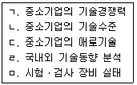
- ㄱ, ㄴ, ㄷ
- ㄱ, ㄴ, ㄷ, ㄹ
- ㄱ, ㄴ, ㄹ, ㅁ
- ㄱ, ㄷ, ㄹ, ㅁ
- ㄱ, ㄴ, ㄷ, ㄹ, ㅁ
(정답률: 알수없음)
26. 중소기업 기술혁신 촉진법상 중소기업의 기술혁신촉진 지원사업에 포함되지 않는 것은?
- 기술혁신 과제의 사업타당성 조사
- 근로시간의 단축 지원
- 기술혁신에 필요한 자금 지원
- 수요와 연계된 기술혁신의 지원
- 산업ㆍ안전 등에 관한 해외규격 획득에 대한 지원
(정답률: 알수없음)
27. 여성기업지원에 관한 법률의 내용으로 옳지 않은 것은?
- 중소기업청장은 여성기업의 활동 현황 및 실태를 파악하기 위하여 2년마다 실태조사를 하고 그 결과를 공표하여야 한다.
- 모든 기업의 장은 중소기업기본법에 따른 중소기업에 해당하는 여성기업이 직접 생산하고 제공하는 제품의 구매를 촉진하여야 한다.
- 국가 및 지방자치단체가 기업에 대한 자금을 지원 할 때 여성기업의 활동과 창업을 촉진하기 위하여 여성기업을 우대하여야 한다.
- 중소기업청장은 여성경제인 및 여성기업의 근로자에 대하여 경영능력과 기술수준을 향상시키기 위한 연수 및 지도사업 등을 실시할 수 있다.
- 중소기업청장은 여성의 창업을 촉진하기 위하여 창업보육센터사업자를 지정할 때에는 여성을 위한 창업보육센터사업자를 우선 지정할 수 있다.
(정답률: 알수없음)
28. 여성기업지원에 관한 법률상 균형성장촉진위원회에 관한 설명으로 옳은 것은?
- 여성기업활동 촉진에 관한 기본계획 및 여성의 기업활동 촉진에 관한 중요 사항을 심의하기 위하여 산업통상자원부에 균형성장촉진위원회를 둔다.
- 경제분야ㆍ중소기업 및 여성정책에 관한 학식과 경험이 풍부한 자 중에서 중소기업청장이 위촉한 위원의 임기는 3년으로 하되, 1차에 한하여 연임할 수 있다.
- 균형성장촉진위원회는 위원장 1인을 포함한 15인 이내의 위원으로 구성한다.
- 위원장은 산업통상자원부장관이 된다.
- 공공기관의 여성기업에 대한 불합리한 차별적 관행에 대하여 중소기업청장의 시정 요청이 있는 경우 균형성장촉진위원회는 그 시정에 관한 사항을 심의한다.
(정답률: 알수없음)
29. 소기업 및 소상공인지원을 위한 특별조치법상 소기업 지원계획 수립 등에 관한 설명으로 옳지 않은 것은?
- 중앙행정기관의 장 및 시ㆍ도지사는 소기업의 경영안정을 지원하기 위하여 3년마다 소기업 지원 계획을 수립ㆍ시행하여야 한다.
- 중앙행정기관의 장 및 시ㆍ도지사는 소기업과 소상공인에 대한 지원계획을 통합하여 수립하여야 한다.
- 중앙행정기관의 장 및 시ㆍ도지사는 지원계획 및 그 실적을 중소기업청장에게 제출하여야 한다.
- 중소기업청장은 제출된 지원계획 및 실적을 통합하여 소기업 종합지원계획을 수립하고, 이를 일간신문에 공고하여야 한다.
- 중소기업청장은 중앙행정기관의 장 및 시ㆍ도지사에게 지원계획의 조정을 요청할 수 있다.
(정답률: 알수없음)
30. 소기업 및 소상공인지원을 위한 특별조치법에 관한 내용으로 ( )에 들어갈 사항을 순서대로 바르게 나열한 것은?
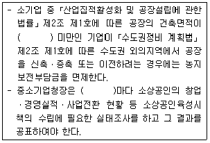
- 5백제곱미터, 1년
- 1천제곱미터, 2년
- 1천제곱미터, 3년
- 3천제곱미터, 3년
- 3천제곱미터, 4년
(정답률: 알수없음)
31. 중소기업 사업전환 촉진에 관한 특별법상 승인기업이 주식교환을 하려고 할 때 주식교환계약서에 포함되어야 하는 사항으로 옳은 것을 모두 고른 것은?
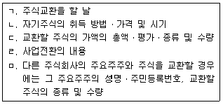
- ㄱ, ㄴ, ㄷ
- ㄴ, ㄷ, ㅁ
- ㄱ, ㄴ, ㄷ, ㄹ
- ㄴ, ㄷ, ㄹ, ㅁ
- ㄱ, ㄴ, ㄷ, ㄹ, ㅁ
(정답률: 알수없음)
32. 중소기업 사업전환 촉진에 관한 특별법상 사업전환계획에 대한 설명으로 옳은 것은?
- 승인기업이 사업전환계획의 주요 내용을 변경하는 경우 중소기업청장에게 통지하여야 한다.
- 중소기업청장은 승인기업에 대하여 사업전환계획의 이행실적조사를 1년에 한 번 이상 하여야 한다.
- 중소기업청장은 승인기업에 그 계획의 중단을 권고하려는 경우에는 권고사항을 명시한 문서로 하여야 하며, 계획의 변경을 권고하려는 경우에는 구두로도 할 수 있다.
- 중소기업청장은 사업전환계획 승인의 취소 권한을 시ㆍ군ㆍ구의 장에게 위임한다.
- 승인기업이 사업전환계획을 중단하기 위하여는 중소기업청장의 승인을 받아야 한다.
(정답률: 알수없음)
33. 중소기업 사업전환 촉진에 관한 특별법상 사업전환을 위한 행위 중에서 반대주주가 주식매수청구권을 행사할 수 없는 경우는?
- 주식교환
- 신주발행에 따른 주식교환
- 합병
- 분할합병
- 다른 회사의 영업의 양수
(정답률: 알수없음)
34. 중소기업 사업전환 촉진에 관한 특별법상 중소기업사업전환촉진계획을 수립할 때 포함되지 않는 사항은?
- 사업전환을 지원하기 위한 방안에 관한 사항
- 중소기업 사업전환정책의 추진방향에 관한 사항
- 사업전환 지원체계의 구축과 운영에 관한 사항
- 사업전환을 촉진하기 위한 제도개선에 관한 사항
- 중소기업의 인식개선을 위한 홍보에 관한 사항
(정답률: 알수없음)
35. 중소기업 인력지원 특별법상 중소기업청장이 하는 중소기업의 인력 및 인식개선에 관한 실태조사에 포함되어야 할 사항을 모두 고른 것은?
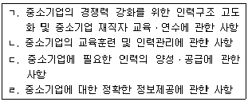
- ㄱ, ㄴ
- ㄴ, ㄹ
- ㄱ, ㄴ, ㄷ
- ㄴ, ㄷ, ㄹ
- ㄱ, ㄴ, ㄷ, ㄹ
(정답률: 알수없음)
36. 중소기업 인력지원 특별법에 관한 내용으로 옳지 않은 것은?
- 국가는 중소기업에 대한 인력지원을 위하여 필요한 시책을 수립하고 시행하여야 한다.
- 중소기업청장은 15세 이상 29세 이하인 미취업자의 중소기업 취업을 촉진하기 위하여 이들을 고용 하는 중소기업에 고용장려금을 지급하여야 한다.
- 중소기업청장은 미취업자를 대상으로 산업현장에서 필요한 실무교육과 현장연수를 받게 한 후 중소기업에 채용을 알선하는 사업을 할 수 있다.
- 정부는 중소기업의 근로시간 단축에 따라 생산성을 높이기 위한 설비투자 지원을 제공할 수 있다.
- 중소기업청장은 중소기업에 대한 인력지원 시책을 효과적으로 수행하기 위하여 중소기업 인력지원 업무를 전담하는 조직을 설치할 수 있다.
(정답률: 알수없음)
37. 중소기업 인력지원 특별법상 중소기업 인력지원 기본계획의 내용에 포함되지 않는 것은?
- 중소기업 인력지원의 목표 및 정책 기본방향
- 산업구조의 변화를 반영한 중소기업의 인력활용에 관한 사항
- 중소기업의 근무환경 개선에 관한 사항
- 중소기업의 홍보를 위한 교육, 정보제공, 현장체험 등 인식개선에 관한 사항
- 중소기업 사업전환정책의 추진방향에 관한 사항
(정답률: 알수없음)
38. 중소기업 인력지원 특별법상 중소기업으로의 인력 유입을 위한 환경조성에 관한 설명으로 옳지 않은 것은?
- 정부가 인력지원사업을 할 때 우대하는 기업은 제조업을 영위하는 소기업을 말한다.
- 정부는 근로자에게 학자금을 지원할 때 소기업근로자를 우대한다.
- 정부로부터 문화생활 향상 등을 위한 지원을 받을 수 있는 자는 중소기업에 10년 이상 재직한 근로자이어야 한다.
- 우수중소기업을 발굴하기 위한 추천절차 및 선정 기준에 필요한 사항은 중소기업청장이 정하여 고시한다.
- 중소기업청장은 중소기업에서 같은 분야 및 직종의 생산업무에 15년 이상 종사한 사람이 해당 직종과 관련된 분야에서 신기술에 기반한 창업을 하려는 경우에는 자금 등을 우선적으로 지원할 수 있다.
(정답률: 알수없음)
39. 장애인기업활동 촉진법에 관한 내용으로 옳지 않은 것은?
- 장애경제인이란 장애인기업의 대표자와 임원으로서 그 기업의 최고의사 결정에 참여하는 장애인을 말한다.
- 국가는 한국장애경제인협회가 그 설립이나 사업을 위하여 국유재산을 무상으로 대부받은 날부터 2년이 지나도록 목적사업을 시행하지 아니한 경우에는 협회의 설립을 취소할 수 있다.
- 중소기업청장은 장애인기업의 활동 현황 및 실태를 파악하기 위하여 2년마다 실태조사를 하고 그 결과를 공표하여야 한다.
- 한국장애경제인협회를 설립하고자 하는 때에는 장애경제인 5인 이상의 발기인이 장애경제인 100인 이상의 동의를 얻어 창립총회를 개최하여야 한다.
- 장애인기업활동 촉진법에 따른 지원을 받기 위하여 장애인의 명의를 사용한 자 또는 그러한 목적으로 명의를 대여한 장애인은 3년 이하의 징역 또는 3천만원 이하의 벌금에 처한다.
(정답률: 알수없음)
40. 장애인기업활동 촉진법에 관한 내용으로 ( ) 안에 들어갈 용어를 순서대로 바르게 나열한 것은?
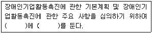
- 중소기업청, 장애인기업활동촉진위원회
- 한국장애경제인협회, 장애인기업종합지원센터
- 중소기업청, 장애인기업종합지원센터
- 한국장애경제인협회, 장애인기업활동촉진위원회
- 중소기업청, 한국장애경제인협회
(정답률: 알수없음)
2과목: 경영학
41. 관리과정의 순서로 옳은 것은?
- 조직화 → 통제 → 지휘 → 계획수립
- 계획수립 → 조직화 → 지휘 → 통제
- 조직화 → 지휘 → 통제 → 계획수립
- 계획수립 → 지휘 → 조직화 → 통제
- 지휘 → 통제 → 계획수립 → 조직화
(정답률: 알수없음)
42. 계획기간 내에 변화하는 수요를 가장 경제적으로 충족시킬 수 있도록 기업이 보유한 생산능력의 범위내에서 생산수준, 고용수준, 재고수준, 하청수준 등을 결정하는 것은?
- 기준생산계획
- 능력소요계획
- 총괄생산계획
- 자재소요계획
- 생산일정계획
(정답률: 알수없음)
43. 페이욜(H. Fayol)이 제시한 관리원칙에 해당되지않는 것은?
- 분권화의 원칙
- 계층화의 원칙
- 분업화의 원칙
- 지휘일원화의 원칙
- 조직목표 우선의 원칙
(정답률: 알수없음)
44. 계량경영학의 주요 기법으로 옳지 않은 것은?
- 재고모형
- 대기이론
- 시뮬레이션
- 선형계획법
- 과학적 관리법
(정답률: 알수없음)
45. 독일 경영학과 미국 경영학의 비교 설명으로 옳지 않은 것은?
- 독일 경영학은 이론적 성향이 강하고, 미국 경영학은 실천적 성향이 강하다.
- 독일 경영학은 미국 경영학에 비해 오랜 역사를 가지고 있다.
- 독일 경영학은 연구의 주체가 대부분 학자인데 비해 미국 경영학은 초기에 주로 실무자에 의해 연구 되었다.
- 독일 경영학은 경영의 객관적 측면을 파악하고자 한데 비해 미국 경영학은 경영의 주체적 측면을 파악하고자 하였다.
- 독일 경영학은 관리론적 접근방법을 주로 사용한데 비해 미국 경영학은 경제학적 접근방법을 주로 사용하였다.
(정답률: 알수없음)
46. 효율성(efficiency)과 효과성(effectiveness)에 관한설명으로 옳지 않은 것은?
- 효과성은 자원의 사용정도를, 효율성은 목표의 달성 정도를 평가대상으로 한다.
- 효율성은 일을 올바르게 함(do things right)을, 효과성은 옳은 일을 함(do right things)을 의미한다.
- 성공적 조직이라면 효율성과 효과성이 모두 높다.
- 효율성은 목표달성을 위한 수단이다.
- 효율성은 최소한의 자원 투입으로 최대한의 산출을, 효과성은 목표의 최대한 달성을 지향한다.
(정답률: 알수없음)
47. 경영학의 역사적 전개과정상에서 나타난 이론들 중 성격이 다른 것은?
- 매슬로우(A. Maslow)의 욕구단계론
- 허츠버그(F. Herzberg)의 2요인이론
- 맥그리거(D. McGregor)의 X-Y이론
- 베버(M. Weber)의 관료제 조직론
- 아지리스(C. Argyris)의 성숙-미성숙이론
(정답률: 알수없음)
48. 현대적 직무설계 방안에 해당되지 않는 것은?
- 직무순환(job rotation)
- 직무확대(job enlargement)
- 직무충실화(job enrichment)
- 직무전문화(job specialization)
- 준자율적 작업집단(semi-autonomous work group)
(정답률: 알수없음)
49. 자회사 주식의 일부 또는 전부를 소유해서 자회사 경영권을 지배하는 지주회사와 관련이 있는 기업 결합은?
- 콘체른(konzern)
- 카르텔(cartel)
- 트러스트(trust)
- 콤비나트(kombinat)
- 조인트 벤처(joint venture)
(정답률: 알수없음)
50. 기업을 둘러싼 환경에 관한 설명으로 옳지 않은 것은?
- 경제적 환경의 구체적 내용으로 경제체제, 경제상황, 국가경제규모, 재정, 금융정책 등이 있다.
- 기업의 환경을 내부환경과 외부환경으로 구분했을 때 주주는 외부환경에 속한다.
- 기업의 간접환경(일반환경)에는 정치ㆍ법률적 환경, 경제적 환경, 기술적 환경, 사회ㆍ문화적 환경 등이 있다.
- 기업에 노동력을 공급하는 종업원도 기업의 환경요인 중 하나이다.
- 기업의 경쟁자나 부품 공급자는 직접환경(과업환경) 요인이다.
(정답률: 알수없음)
51. 주식회사에 관한 설명으로 옳지 않은 것은?
- 주주의 유한책임으로 자본조달이 용이하여 대자본의 형성이 쉽다.
- 주주총회에서 주주의 의결권은 1주 1의결권을 원칙으로 한다.
- 이사는 주주총회에서 선임되며, 최소 3인 이상이어야 하고, 그 임기는 3년이다.
- 감사는 임의기구로서 그 설치 여부는 자유이다.
- 기업운영에 소요되는 자본의 조달과 경영의 합리화를 기하기 위해서 형성된 자본적 공동기업이다.
(정답률: 알수없음)
52. 민간부문이 보유한 정보, 기술, 자본을 공공부문에 도입해 공동출자형식으로 행하는 기관 또는 사업은?
- 정부출연기관
- 정부재정지원기관
- 제3섹터
- 공익사업
- 주택사업
(정답률: 알수없음)
53. 기업의 사회적 책임에 대한 고전적 견해의 주장에 해당되는 것은?
- 기업의 사회적 목표 추구는 제품 및 서비스의 가격상승을 초래하여 소비자들이 피해를 보게 된다.
- 기업의 사회적 목표 추구는 장기적으로 기업에 이익을 가져다준다.
- 기업의 사회적 목표 추구로 기업은 기업이미지 개선을 도모할 수 있다.
- 기업의 사회적 목표 추구로 기업은 정부규제를 회피할 수 있다.
- 기업의 사회적 목표 추구는 기업의 권력에 상응하는 책임의 균형 차원에서 요구된다.
(정답률: 알수없음)
54. 수직적 통합에 관한 설명으로 옳지 않은 것은?
- 수직적 통합은 거래비용의 감소에 따른 원가상 이점이 있는 반면, 관련 활동 간의 생산능력의 불균형과 독점적 공급으로 인한 비효율성에 의해 오히려 원가열위로 작용하기도 한다.
- 전방통합을 통해 유통망을 확보하여 고객에게 차별적 서비스를 제공하는 것이 가능해진다.
- 후방통합을 통해 양질의 원재료를 안정적으로 공급받아 고품질을 유지할 수 있다.
- 수직적 통합은 기업활동의 유연성을 강화시키는 요인으로 작용해서 경쟁력을 강화시킬 수 있으며, 특히 기술변화가 심하고 수요가 불확실하거나 경쟁이 치열한 경우에 적합하다.
- 기업 간 거래에는 제품사양이나 가격, 납기 등을 결정하는 데 비용이 수반되지만, 이런 활동을 내부화하여 비용절감 및 원료조달이나 제품의 판로확보가 가능해지고, 이를 통해 안정적 기업활동이 유지될 수 있다.
(정답률: 알수없음)
55. 기업분할 중 물적분할에 관한 설명으로 옳은 것은?
- 기존 회사의 물적자산 중 일부를 기존 회사와 무관한 다른 회사에 매각하는 것을 말한다.
- 기존 회사 영업부문의 일부를 신설 분할회사로 이전시키면서 기존 회사의 주주가 신설 분할회사의 주식을 취득하는 것을 말한다.
- 기존 회사의 자산 중 인적자산을 제외한 물적자산을 신설 분할회사로 이전시키는 것을 말한다.
- 기존 회사 영업부문의 일부를 신설 분할회사로 이전시키고, 기존 회사가 신설 분할회사의 주식을 보유하는 경우를 말한다.
- 기존 회사의 물적자산 중 일부를 신설 분할회사로 이전시키면서 신설 분할회사의 주주가 기존 회사의 주식을 취득하는 것을 말한다.
(정답률: 알수없음)
56. 포터(M. Porter)가 제시한 산업구조 분석의 요소로 옳지 않은 것은?
- 대체재의 위협
- 가치사슬 활동
- 공급자의 교섭력
- 구매자의 교섭력
- 신규경쟁자의 진입 가능성
(정답률: 알수없음)
57. 전통적 기업과 지식기업의 특징을 비교하여 설명한 것으로 옳지 않은 것은?
- 전통적 기업은 계층조직인데 비해 지식기업은 임기응변식 조직이다.
- 전통적 기업은 분업시스템인데 비해 지식기업은 유기적 네트워크 조직이다.
- 전통적 기업은 로테크(low-tech) 조직인데 비해 지식기업은 하이테크(high-tech) 조직이다.
- 전통적 기업은 자금ㆍ사람중심인데 비해 지식기업은 지식중심이다.
- 전통적 기업의 생산원리는 유연성, 창조성, 다품종 소량생산인데 비해 지식기업의 생산원리는 효율성, 생산성, 소품종 다량생산이다.
(정답률: 알수없음)
58. BCG 매트릭스에 관한 설명으로 옳은 것은?
- 어떤 사업 단위가 개(dog) 위치에 있었다면 이를 별(star)로 이동하도록 관리하는 것이 바람직하다.
- 현금젖소(cash cow) 상황은 시장성장률은 낮지만, 시장점유율이 높은 경우이다.
- 물음표(question mark) 상황은 시장이 커질 가능성도 낮고, 수익도 거의 나지 않는 상황이다.
- 개(dog) 상황은 현금유입은 적지만, 현금유출이 많은 경우이다.
- 별(star) 상황에 필요한 전략은 현상유지 전략이다.
(정답률: 알수없음)
59. 비관련 다각화의 이점에 관한 설명으로 옳지 않은 것은?
- 사업분야의 다양화로 위험분산이 가능하다.
- 수익성이나 성장성이 높은 사업분야를 선택할 경우 성과가 향상될 수 있다.
- 재무자원의 관리나 투자자금의 배분이 용이하다.
- 주력 사업분야를 바꾸려고 하는 경우나 현 사업분야에서 경쟁력이 취약한 경우 효과적 대안이 될수 있다.
- 자원의 공동활용과 축적된 기업능력의 활용을 가능하게 하므로 시너지효과와 범위의 경제에서 오는 이점을 누릴 수 있다.
(정답률: 알수없음)
60. 경쟁관계에 있는 기업들 간에 특정사업 및 업무분야에 걸쳐 협력관계를 맺는 것을 의미하는 것으로 기업 간의 상호 보완적인 제품, 시설, 기능, 기술을 공유하고자 하는 것은?
- 아웃소싱
- 전략적 제휴
- 기업집중
- 기업계열화
- 기업전문화
(정답률: 알수없음)
61. 경영통제에 관한 설명으로 옳지 않은 것은?
- 사전통제는 목표달성을 위하여 사전준비를 확인하는 가장 바람직한 통제이다.
- 진행통제는 업무가 수행되는 동안에 통제에 영향을 미치는 것을 통제하는 방법이다.
- 사후통제는 업무가 종료된 후에 이루어지는 통제활동으로 피드백을 통해 결과의 변경이 가능하다.
- 통제활동을 수행하기 위해서는 명확한 평가기준이 필요하다.
- 평가기준과 수행결과의 차이에 대한 원인이 밝혀지면 이에 대한 대응조치를 강구해야 한다.
(정답률: 알수없음)
62. 전문가들을 한 자리에 모으지 않고, 이들을 대상으로 서면으로 정보를 수집하여 의견을 종합한 후 종합의견에 대한 이들의 의견을 재차 묻는 식의 지속적인 피드백 과정을 수 회 거쳐 의견을 수렴하는 방법은?
- 델파이법
- 시장조사법
- 자료유추법
- 전문가의견법
- 판매원의견종합법
(정답률: 알수없음)
63. 훈련의 방법을 직장 내 훈련(OJT)과 직장 외 훈련(Off-JT)으로 구분할 때 직장 외 훈련에 해당되지 않는 것은?
- 강의실 강의
- 영상과 비디오
- 시뮬레이션
- 직무순환
- 연수원 교육
(정답률: 알수없음)
64. 조직형태에 관한 설명으로 옳은 것은?
- 기능별 조직은 특정과제나 목표를 달성하기 위해 구성하는 임시조직이다.
- 부문별 조직은 업무내용이나 기능을 유사한 것끼리 묶는 조직형태를 말한다.
- 네트워크 조직은 전통적 조직의 핵심요소를 간직 하고 있으나 조직의 경계와 구조가 없다.
- 프로젝트 조직은 동일한 제품이나 지역, 고객, 업무과정을 중심으로 분화하여 만든 조직이다.
- 라인조직은 기능별 조직의 다른 형태로 기능을 중심으로 수평적으로 조직된다.
(정답률: 알수없음)
65. 인과관계 예측기법으로 옳지 않은 것은?
- 회귀분석법
- 계량경제모형
- 박스-젠킨스모형
- 투입-산출모형
- 시뮬레이션모형
(정답률: 알수없음)
66. 제품수명주기에 관한 설명으로 옳은 것은?
- 도입기는 신제품이 시장에 처음 나타나는 시기로 이때 매출은 적고 상표를 강조하는 광고를 하며 경쟁자가 진입한다.
- 성장기는 시장에서 어느 정도 알려져서 매출이 급 상승하는 시기이며, 이때 본원적 수요를 자극하기 위한 광고를 하며 상품을 알리는데 주력해야 한다.
- 안정기는 매출도 많지만 안정에 접어든 시기로 이때 이익도 가장 많이 난다.
- 성숙기는 매출이 최고조에 달하는 시기이며 이때 경쟁이 심하고 상표의 차별성을 강조하며 마케팅 전략의 수정이 필요하다.
- 쇠퇴기에는 새로운 신상품이 나타나지만 매출이 줄지 않고 이익이 계속 발생하므로 이를 유지하는 전략을 구사하는 것이 필요하다.
(정답률: 알수없음)
67. 마케팅전략에 관한 설명으로 옳지 않은 것은?
- STP 전략이란 시장세분화, 목표시장선정, 제품포지셔닝을 의미한다.
- 시장세분화는 하나의 시장을 다양한 특성에 따라 구분하는 것이다.
- 마케팅믹스전략은 제품, 가격, 유통경로, 촉진의 4P 전략으로 구성된다.
- 유통경로는 직접유통경로와 간접유통경로로 구분하는 것이 가능하다.
- 촉진수단에는 상표결정과 포장결정 등이 있다.
(정답률: 알수없음)
68. 장기적인 조직의 임무, 목표, 자원배분에 관한 의사결정을 수행하는 과정은?
- 운영적 계획
- 전술적 계획
- 전략적 계획
- 지속적 계획
- 산업적 계획
(정답률: 알수없음)
69. A씨는 건물을 지어 분양하려고 한다. 이 건물을 짓는데 7,000 만원이 소요되지만 1년 후에 7,865 만원의 현금을 받고 매각할 수 있다. 시장 이자율이 연 10 %라고 할 때 이 투자안의 현재 가치는?
- 7,100 만원
- 7,150 만원
- 7,200 만원
- 7,250 만원
- 7,300 만원
(정답률: 알수없음)
70. 목표관리(MBO)에서 바람직한 목표설정방법이 아닌것은?
- 약간 어려운 목표를 설정해야 한다.
- 목표설정과정에 당사자가 참여해야 한다.
- 목표설정에 있어서 수량, 기간, 절차, 범위를 구체적으로 설정해야 한다.
- 경영전략에 의거하여 하향식(top-down 방식)으로 목표를 설정해야 한다.
- 목표설정 후 업무가 진행되어 가는 도중에도 현재까지 수행된 업무 결과를 담당자에게 알려주어야 한다.
(정답률: 알수없음)
71. 어느 하나의 평가요소에 대한 평가의 결과가 다른 요소의 평가 결과에 영향을 미치는 평가상의 오류는?
- 관대화 경향(leniency tendency)
- 상동적 평가(stereotyping)
- 후광효과(halo effect)
- 중심화 경향(central tendency)
- 최근효과(recency tendency)
(정답률: 알수없음)
72. 매슬로우의 욕구 5단계를 낮은 단계에서 높은 단계의 순서로 올바르게 나열한 것은?
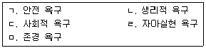
- ㄱ → ㄴ → ㄷ → ㄹ → ㅁ
- ㄱ → ㄴ → ㄷ → ㅁ → ㄹ
- ㄴ → ㄱ → ㄷ → ㅁ → ㄹ
- ㄴ → ㄷ → ㄱ → ㄹ → ㅁ
- ㄴ → ㄷ → ㄱ → ㅁ → ㄹ
(정답률: 알수없음)
73. 기업의 인수합병 목적으로 옳지 않은 것은?
- 시장지배력 확대
- 투자소요액 증대
- 시장진입 속도 단축
- 성숙된 시장으로 진입
- 규모의 경제와 범위의 경제 활용
(정답률: 알수없음)
74. 공정별 배치의 장점에 관한 설명으로 옳지 않은 것은?
- 다양한 생산공정으로 신축성이 크다.
- 생산시스템의 계획 및 통제가 단순하다.
- 범용설비는 비교적 저렴하므로 초기 투자비용이 크지 않다.
- 하나의 기계가 고장나도 전체시스템은 크게 영향을 받지 않는다.
- 종업원들에게 다양한 과업을 제공해 줄 수 있어서 직무의 권태감을 줄일 수 있다.
(정답률: 알수없음)
75. 지난 달의 수요예측치가 300 개이고, 실제수요치가 250 개로 나타났다. 평활계수가 0.1인 경우 단순지수평활법을 이용하여 계산한 이번 달의 수요예측치는?
- 280 개
- 285 개
- 290 개
- 295 개
- 300 개
(정답률: 알수없음)
76. 기업경영에서 정보의 가치를 결정하는 요인으로 옳지 않은 것은?
- 적합성
- 정확성
- 적시성
- 형태성
- 접근성
(정답률: 알수없음)
77. 한기업이 타 산업의 전혀 다른 사업활동을 하는 기업을 인수합병하는 것은?
- 수평적 인수합병
- 수직적 인수합병
- 적대적 인수합병
- 관련기업 인수합병
- 콩글로메리트 인수합병
(정답률: 알수없음)
78. 비용, 품질, 서비스와 같은 핵심적 경영요소를 획기적으로 향상시킬 수 있도록 경영과정과 지원 시스템을 근본적으로 재설계하는 기법은?
- 리엔지니어링(reengineering)
- 리스트럭처링(restructuring)
- 다운사이징(downsizing)
- 가치공학(value engineering)
- 식스시그마(six sigma)
(정답률: 알수없음)
79. 지적재산권의 유형이라 할 수 없는 것은?
- 특허권
- 상표권
- 통제권
- 디자인권
- 실용신안권
(정답률: 알수없음)
80. 제휴와 투자에 의한 국제화 전략에 해당되지 않는 것은?
- 프랜차이징
- 합작기업
- 컨소시엄
- 해외직접투자
- 구상무역
(정답률: 알수없음)
3과목: 회계학개론
81. 유용한 재무정보가 되기 위해 '재무보고를 위한 개념체계'에서 제시하는 근본적 질적 특성만으로 묶인 것은?
- 목적적합성, 비교가능성
- 비교가능성, 이해가능성
- 충실한 표현, 적시성
- 적시성, 이해가능성
- 목적적합성, 충실한 표현
(정답률: 알수없음)
82. '재무보고를 위한 개념체계'의 내용 중 재무정보제공자 및 이용자뿐만 아니라 회계기준제정기구가 가능한 새로운 재무보고 요구사항의 효익을 고려할 때 염두에 두어야 할 포괄적 제약요인은?
- 원가
- 일관성
- 표현의 충실성
- 중요성
- 정보의 유용성
(정답률: 알수없음)
83. '재무보고를 위한 개념체계'에 관한 설명으로 옳은 것은?
- 한국채택국제회계기준의 일부이다.
- 특정한 측정과 공시 문제에 관한 기준을 정하고 있다.
- 한국채택국제회계기준에 우선한다.
- 내부 이용자를 위한 재무보고의 기초가 되는 개념을 제공한다.
- 재무제표가 한국채택국제회계기준을 따르고 있는지에 대해 감사인이 의견을 형성하는 데 도움을 준다.
(정답률: 알수없음)
84. 재무제표 요소의 인식 및 측정에 관한 설명으로 옳지 않은 것은?
- 재무제표 요소의 인식은 인식기준을 충족하는 항목을 재무상태표나 포괄손익계산서에 반영하는 과정을 말한다.
- 재무제표 요소의 인식기준을 충족하였더라도 관련된 회계정책에 대한 설명 자료가 존재하면, 해당 항목은 재무제표에 인식하지 않아도 된다.
- 재무제표의 요소 간 상호연관성은 인식요건을 충족한 자산을 인식하는 경우 수익이나 부채 같은 다른 요소가 자동적으로 인식되어야 하는 것을 의미한다.
- 재무제표 요소의 정의에 부합하는 항목과 관련된 미래경제적효익이 기업에 유입되거나 기업으로부터 유출될 가능성이 높고 그 항목의 원가 또는 가치를 신뢰성 있게 측정할 수 있을 때 재무제표에 인식된다.
- 인식기준에는 특정 항목과 관련된 미래경제적효익이 기업에 유입되거나 기업에서 유출될 불확실성의 정도를 의미하는 발생가능성의 개념이 사용되는데, 이는 영업활동이 수행되는 기업환경의 특성을 반영하는 불확실성을 고려하고자 하는 것이다.
(정답률: 알수없음)
85. '재무제표의 표시'에서 제시하는 일반사항이 아닌것은?
- 유사한 항목은 중요성 분류에 따라 재무제표에 구분하여 표시한다.
- 당기 재무제표에 보고되는 모든 금액에 대해 전기 비교정보를 공시한다.
- 자산과 부채, 그리고 수익과 비용은 상계하지 아니한다.
- 경영진은 재무제표를 작성할 때 계속기업으로서의 존속가능성을 평가해야 한다.
- 경영진은 현금흐름정보를 포함하여 모든 재무제표를 발생기준으로 작성한다.
(정답률: 알수없음)
86. 다음 자료를 이용할 때, 월말재고금액이 가장 적게 평가되는 방법은?
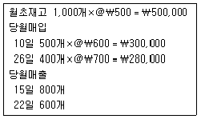
- 가중평균법, 실지재고조사법
- 가중평균법, 계속기록법
- 선입선출법, 실지재고조사법
- 선입선출법, 계속기록법
- 위의 방법 모두 동일
(정답률: 알수없음)
87. 다음 자료를 이용할 때, (주)대전의 공급자에 대한 현금유출 금액은?
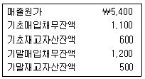
- ￦5,200
- ￦5,300
- ￦5,400
- ￦5,500
- ￦5,600
(정답률: 알수없음)
88. 다음은 (주)공덕의 20×1년 말 재무상태표이다. (주)공덕의 유동비율이 400%일 때 자본금은?
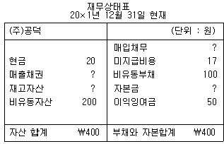
- ￦100
- ￦130
- ￦170
- ￦200
- ￦233
(정답률: 알수없음)
89. 다음 자료는 (주)대한의 20×1년 말 수정분개 전 재고자산 관련된 정보이다. (주)대한은 도매업에 종사하고 재고자산평가는 상품 종목별로 저가 기준을 적용한다고 할 때, (주)대한이 인식할 20×1년 재고자산평가손실은?
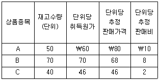
- ￦0
- ￦80
- ￦620
- ￦700
- ￦780
(정답률: 알수없음)
90. (주)대전은 5월 1일 4월분 광고료 ￦180을 지급 하였으며, 5월 발생 판매비 ￦1,010은 5월 중 지급하였고, 5월분 관리비 ￦580은 6월 2일 지급 하였다. (주)대전이 인식할 5월의 비용은?
- ￦580
- ￦1,010
- ￦1,190
- ￦1,590
- ￦1,770
(정답률: 알수없음)
91. 회계정책에 대한 감사인과 경영자의 의견차이가 매우 중요하여 이를 수정하지 않는 한 재무제표 자체의 의미가 상실되거나 혹은 재무제표 전체를 오도할 가능성이 있다고 판단될 때 표명되는 감사 의견은?
- 적정의견
- 부적정의견
- 부분한정의견
- 한정의견
- 의견거절
(정답률: 알수없음)
92. (주)대전은 영업개시 첫 회계연도에 작성한 수정전 시산표의 소모품계정에 ￦124이 차변 기입되어 있다. 기말의 실제 소모품 재고액이 ￦36이라면, 소모품에 대해 적절한 수정분개를 한 경우 재무제표상의 영향은?
- 비용이 ￦36만큼 증가하고 자산은 ￦124만큼 감소한다.
- 비용만 ￦36만큼 증가한다.
- 비용이 ￦88만큼 증가하고 자산은 ￦88만큼 감소한다.
- 비용만 ￦88만큼 증가한다.
- 순이익과 재무상태에 영향이 없다.
(정답률: 알수없음)
93. (주)대한은 (주)한국 주식을 20×2년도 중 ￦200에 취득하였다. (주)한국 주식의 20×2년 말 공정가치는 ￦220, 20×3년 말 공정가치는 ￦190 이었으며, 20×4년도 중 ￦180에 처분하고 현금으로 수취하였다. (주)한국의 주식은 단기매매금융자산에 해당하며 20×3년 말까지 (주)대한은 올바른 회계처리를 하였다. (주)대한의 20×4년도 중 (주)한국주식 처분에 대한 회계처리는?
- (차)현금 ￦180 (대)단기매매금융자산 ￦200 (차)단기매매금융자산평가손실 ￦20
- (차)현금 ￦180 (대)단기매매금융자산 ￦200 (차)단기매매금융자산처분손실 ￦20
- (차)현금 ￦180 (대)단기매매금융자산 ￦220 (차)단기매매금융자산평가손실 ￦40
- (차)현금 ￦180 (대)단기매매금융자산 ￦190 (차)단기매매금융자산평가손실 ￦10
- (차)현금 ￦180 (대)단기매매금융자산 ￦190 (차)단기매매금융자산처분손실 ￦10
(정답률: 알수없음)
94. 회계기간 말 재무상태표의 현금및현금성자산으로 표시될 수 있는 것은?
- 취득시 상환일이 3개월 이내에 도래하고, 결산일 현재 상환일이 2개월 남은 상환우선주
- 보관 중인 수입인지
- 결산일 3개월 전에 취득하고, 결산일 현재 만기가 1개월 이내에 도래하는 국공채
- 종업원의 가불증서
- 타인발행 약속어음
(정답률: 알수없음)
95. (주)대한은 유형자산 측정방법으로 재평가모형을 적용하고 있다. (주)대한은 기계장치를 20×1년 초에 ￦1,000(내용연수 3년, 잔존가치 ￦100)에 취득하여 정액법으로 감가상각하였다. 20×1년 말 재평가 결과 기계장치의 공정가치가 ￦900으로 확인된 경우 20×1년 말 자본항목에 표시될 재평가잉여금은?
- ￦0
- ￦100
- ￦200
- ￦250
- ￦300
(정답률: 알수없음)
96. 영업권 이외의 무형자산에 대한 설명으로 옳지 않은 것은?
- 무형자산의 잔존가치는 취득원가의 10%를 가정하여 감가상각비를 계산한다.
- 프로젝트의 개발단계에서 발생한 지출이라 하더라도 무형자산의 인식조건을 충족시켜 줄 수 없다면 경상개발비의 과목으로 하여 발생한 기간의 비용으로 인식한다.
- 내부적으로 창출된 무형자산으로 인식할 수 있는 개발비의 취득원가는 인식기준을 최초로 충족시킨 이후에 발생한 지출금액으로 한다.
- 관계법령이나 계약상으로 정해지면 무형자산의 내용연수는 해당기간을 초과할 수 없다.
- 무형자산의 취득원가를 수익창출에 기여하는 기간에 체계적으로 대응시키는 원가배분과정을 상각이라 한다.
(정답률: 알수없음)
97. 감가상각방법에 관한 설명으로 옳지 않은 것은?
- 정액법은 유형자산의 미래경제적 효익이 시간의 경과에 따라 일정하게 소비되는 경우에 적합한 방법이다.
- 정률법에 의한 감가상각비 계산은 장부금액 또는 미상각잔액을 대상으로 하지만, 정액법은 취득원가에서 잔존가치를 차감한 금액을 대상으로 계산한다.
- 정액법은 회계기간 초에 취득한 유형자산에 대한 감가상각액이 매 상각기간에 동일한 금액이 상각되는 특징을 가지고 있다.
- 정률법은 상각 초기에는 많은 금액이 상각되고 기간이 경과함에 따라 점차 상각액이 감소하는 체감 잔액법이다.
- 기업은 모든 유형자산에 대해 단일의 감가상각방법을 선택하여 적용하고, 감가상각방법이 선택된 이후에는 특별한 사유가 없는 한 계속적으로 적용해야 한다.
(정답률: 알수없음)
98. 유형자산의 취득원가에 포함되지 않는 것은?
- 건설기간 동안 발생한 적격자산의 건설관련 차입원가
- 취득및등록세
- 최초 취득을 위해 운송 중에 발생한 보험료
- 신규 건설을 위해 철거한 기존 사용 건물의 장부금액
- 취득과 관련한 중개수수료
(정답률: 알수없음)
99. (주)공덕은 당기 초에 액면금액 ￦1,000의 사채(5년 만기, 액면이자율 5%)를 할인발행하였다. 할인발행된 사채와 사채이자에 관한 설명으로 옳지 않은 것은?
- 사채발행비의 지출이 있다면, 사채할인발행차금이 증가한다.
- 유효이자율법에 의한 사채할인발행차금 상각액은 초기에 적고 기간이 경과할수록 증가한다.
- 사채이자 현금지급액은 매년 동일하다.
- 사채의 장부가액은 기간이 경과할수록 커진다.
- 매년 사채의 기초 장부가액을 기준으로 한 유효 이자율은 기간이 경과할수록 커진다.
(정답률: 알수없음)
100. (주)대한은 ￦10,000에 토지를 취득하면서, 거래대금 중 ￦2,000은 현금 지급하고, 나머지 금액은 6개월 후에 지급하기로 하였다. 해당 거래의 인식으로 인한 재무제표 요소 변화는?
- 자산과 부채가 증가한다.
- 자산과 자본이 감소한다.
- 부채와 자본이 감소한다.
- 자산이 증가하고, 자본은 감소한다.
- 자산이 증가하고, 부채는 감소한다.
(정답률: 알수없음)
101. (주)대한은 회사채(액면이자율 5%, 시장이자율 7%)를 할인발행하고 회계기간 말에 유효이자율법에 의해 상각을 한다. 이 경우 사채발행차금의 상각이 당기순이익과 사채의 장부금액에 미치는 영향은?
- 당기순이익:감소, 사채의 장부금액:감소
- 당기순이익:증가, 사채의 장부금액:감소
- 당기순이익:감소, 사채의 장부금액:증가
- 당기순이익:불변, 사채의 장부금액:감소
- 당기순이익:불변, 사채의 장부금액:증가
(정답률: 알수없음)
102. (주)공덕은 20×0년 7월 1일에 잔존가치 ￦2,000의 기계장치A를 ￦12,000에 구입하였다. 해당 기계장치A를 내용연수 5년, 이중체감법(상각률 40% 가정)을 적용하고, 월할 상각하여 감가상각한다면, 20×1년 포괄손익계산서에 인식될 기계장치A의 감가상각비는?
- ￦2,000
- ￦2,880
- ￦3,840
- ￦4,000
- ￦4,800
(정답률: 알수없음)
103. 포괄손익계산서에 관한 설명으로 옳지 않은 것은?
- 포괄손익계산서는 일정기간 동안 기업의 경영성과 정보를 제공하는 재무보고서이다.
- 포괄손익계산서는 한 회계기간에 속하는 수익과 비용 및 당기순손익, 기타포괄손익, 총포괄손익을 보고한다.
- 중단된 사업에서 발생한 영업손익은 기타포괄손익으로 표시한다.
- 비용의 성격별 또는 기능별 분류방법 중에서 신뢰성 있고 더욱 목적적합한 정보를 제공할 수 있는 방법을 적용해야 한다.
- 수익은 재화판매, 용역제공, 자산사용에 대하여 받았거나 받을 대가의 공정가치로 측정한다.
(정답률: 알수없음)
104. (주)공덕은 회사를 설립하면서 주당액면 ￦500의 보통주 100주를 주당 ￦600에 발행하였다. 그 후 (주)공덕은 10주의 자기주식을 주당 ￦550에 취득하였다. 자기주식을 원가법에 따라 처리할 경우 자기주식 10주의 취득이 자본에 미치는 영향은?
- ￦5,000 증가
- ￦5,000 감소
- ￦5,500 증가
- ￦5,500 감소
- 영향 없음
(정답률: 알수없음)
1⑤. 다음에 주어진 (주)대한의 20×1년 말 자료에 따른 당기순이익은?
- ￦139,000
- ￦144,000
- ￦147,000
- ￦150,000
- ￦300,000
(정답률: 알수없음)
106. 20×1년 말 (주)대한의 장부 조사결과 자산과 부채가 ￦1,200과 ￦600이며, 20×1년도 수익과 비용은 ￦450과 ￦380이다. 20×1년도에 추가출자 ￦200과 현금배당 ￦100이 있다. 20×1년 초 자산이 ￦800이라면, 20×1년 초 부채는?
- ￦330
- ￦370
- ￦430
- ￦470
- ￦530
(정답률: 알수없음)
107. 다음 (주)대한의 자료에 따른 20×4년도 가중평균 유통보통주식수는? (단, 적수는 월할계산한다.)
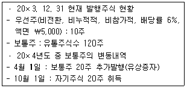
- 115주
- 120주
- 125주
- 130주
- 135주
(정답률: 알수없음)
108. 당기순손익에 영향을 미치는 계정과목으로 옳은 것은?
- 당기손익인식금융자산평가이익
- 매도가능금융자산평가이익
- 매도가능금융자산평가손실
- 감자차익
- 미처분이익잉여금
(정답률: 알수없음)
109. (주)공덕의 회계감사를 받지 않은 20×4년 말 포괄손익계산서의 당기순이익은 ￦240,000이다. (주)공덕의 외부감사인은 감사과정에서 20×4년도에 지급보험료로 처리한 금액 중 기간이 경과하지 않은 보험료 ￦15,000과 20×4년 12월에 지급해야 할 급여 ￦45,000 및 건물에 대한 감가상각비 ￦35,000에 대한 회계처리의 누락과 건물 임대료 수익으로 처리한 금액 ￦120,000 중 기간이 경과하지 않은 금액 ￦30,000을 발견하였다. 공인회계사의 지적사항을 수정한다면, (주)공덕의 20×4년도 당기순이익은?
- ￦140,000
- ￦145,000
- ￦148,000
- ￦175,000
- ￦210,000
(정답률: 알수없음)
110. 취득원가가 ￦8,000인 토지의 전기 말 공정가치는 ￦6,000이며 처분부대원가는 ￦500이고 사용가치는 ￦6,000이었다. 당기 말 토지의 회수가능액은 ￦8,500으로 회복되었다. 전기 말 토지의 회수가능액과 당기 말 손상차손환입액은?
- 회수가능액:￦5,500, 손상차손환입액:￦1,000
- 회수가능액:￦5,500, 손상차손환입액:￦1,500
- 회수가능액:￦5,500, 손상차손환입액:￦2,000
- 회수가능액:￦6,000, 손상차손환입액:￦2,000
- 회수가능액:￦6,000, 손상차손환입액:￦2,500
(정답률: 알수없음)
111. 재화판매로 인한 수익인식조건에 해당하지 않는 것은?
- 재화소유에 따른 유의적인 위험과 보상이 구매자에게 이전되어야 한다.
- 판매자는 판매된 재화의 소유권과 결부된 통상적 수준의 지속적인 관리상 관여를 하지 않고 효과적인 통제도 하지 않는다.
- 거래와 관련하여 발생했거나 발생할 원가를 신뢰성 있게 측정할 수 있다.
- 거래와 관련된 경제적 효익의 유입가능성이 높다.
- 수익금액을 신뢰성 있게 측정할 수 있으며, 수익 금액이 판매자에게 이전되어야 한다.
(정답률: 알수없음)
112. (주)대한은 개별원가계산제도를 채택하고 있다. 제품A의 제조 관련 다음 자료에 따른 당기 직접 재료원가는?
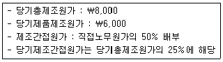
- ￦1,500
- ￦2,000
- ￦2,500
- ￦4,000
- ￦4,500
(정답률: 알수없음)
113. 다음 (주)대한의 당기 자료에 따른 매출총이익은?
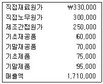
- ￦840,000
- ￦850,000
- ￦860,000
- ￦870,000
- ￦880,000
(정답률: 알수없음)
114. (주)공덕은 개별정상원가계산제도를 사용하고 있다. (주)공덕이 생산하는 제품A의 20×4년 기초재공품은 ￦28,000이며 제품A의 제조와 관련된 20×4년도 원가자료는 다음과 같다. 완성품(제품제조원가)과 매출원가는 제조간접비 예정배부차이를 조정하기 전 금액이다. (주)공덕이 제조간접원가 예정배부차이를 조정하기 전 기말재공품은?
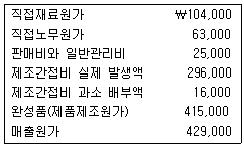
- ￦50,000
- ￦56,000
- ￦58,000
- ￦60,000
- ￦76,000
(정답률: 알수없음)
115. 다음은 단일제품을 생산ㆍ판매하는 (주)공덕의 원가자료이다. (주)공덕의 고정원가는 ￦37,000이며 현재 1,000단위를 판매하고 있다. (주)공덕이 변동원가 ￦12을 증가시키는 부품을 제품에 추가하면 현재보다 380단위의 판매량 증가가 있을 것이다. 이 때 영업이익은 1,000단위 판매시보다 얼마나 증가하는가? (단, 판매가격과 고정원가는 변동이 없다.)
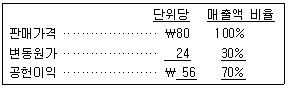
- ￦ 4,560
- ￦ 4,720
- ￦19,000
- ￦23,720
- ￦37,840
(정답률: 알수없음)
116. 의사결정을 위한 원가에 관한 설명으로 옳지 않은 것은?
- 관련원가는 의사결정에 있어 대안 간에 차이가 나는 원가를 말한다.
- 회피가능원가는 의사결정에 있어서 다른 대안 대신 특정 대안을 선택함에 따라 감소할 수 있는 원가를 말한다.
- 변동원가는 생산라인의 폐지와 관련한 의사결정과 관련이 없다.
- 기회원가는 한 대안이 다른 대안에 우선하여 선택되는 경우 포기되는 잠재적 효익을 의미한다.
- 매몰원가는 현재 또는 미래의 의사결정에 의하여 변하지 않는 이미 발생한 원가를 말한다.
(정답률: 알수없음)
117. 단일제품을 생산ㆍ판매하는 (주)대한의 연간 고정원가는 ￦10,000이고 손익분기점 매출액이 ￦25,000 이라면 제품 100단위를 판매하여 ￦2,000의 영업 이익을 달성하기 위한 판매가격은?
- ￦150
- ￦200
- ￦250
- ￦300
- ￦350
(정답률: 알수없음)
118. (주)대한은 기계시간 기준으로 제조간접비를 예정 배부한다. 당기 말 실제제조간접비는 ￦8,000이고 실제기계가동시간은 50시간이다. 당기 제조간접비는 ￦500이 과대 배부되었다면 제조간접비 예정 배부율은?
- ￦150
- ￦160
- ￦170
- ￦180
- ￦190
(정답률: 알수없음)
119. (주)대한의 올해 예상매출액과 고정비가 ￦5,000과 ￦1,500이고 공헌이익률이 50%라면, 안전한계율은?
- 10%
- 20%
- 30%
- 40%
- 50%
(정답률: 알수없음)
120. (주)공덕은 반제품을 생산하는 P부문과 이를 완제품으로 완성하는 F부문이 있다. P부문은 반제품을 외부고객에 판매하거나 F부문으로 사내 대체할 수 있다. 다음은 P부문의 반제품 제조 관련 자료이다. P부문은 현재 외부에 단위당 ￦350의 판매가격으로 700단위를 판매하고 있다. P부문이 반제품을 F부문에게 공급할 경우, 외부고객에게 판매 시 발생하는 단위당 변동운반비 ￦30을 절감할 수있다. F부문이 P부문에게 반제품 150단위의 공급을 요청할 경우, 공급사업부로서 P부문의 반제품에 대한 사내대체가격은 단위당 최소한 얼마이상이어야 하는가? (단, 고정원가는 변동이 없다.)
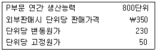
- ￦230
- ￦260
- ￦290
- ￦320
- ￦350
(정답률: 알수없음)